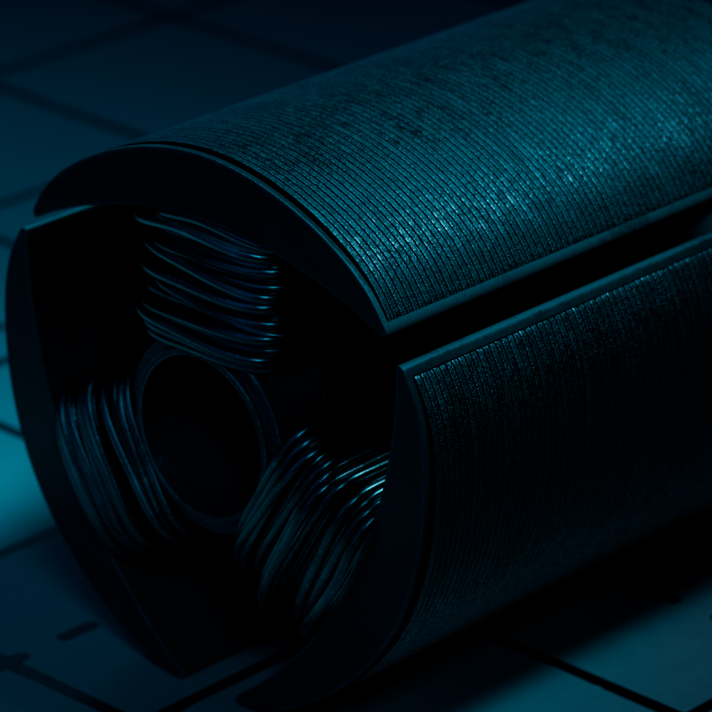
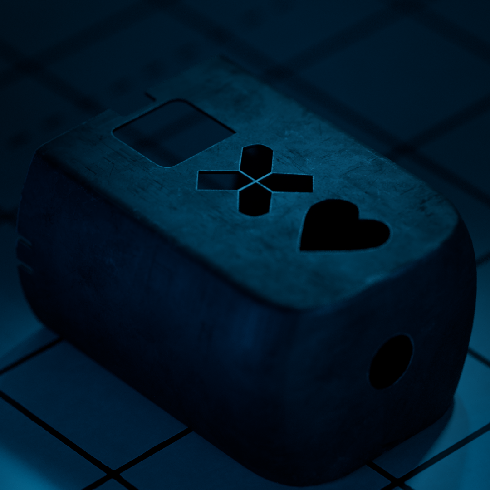
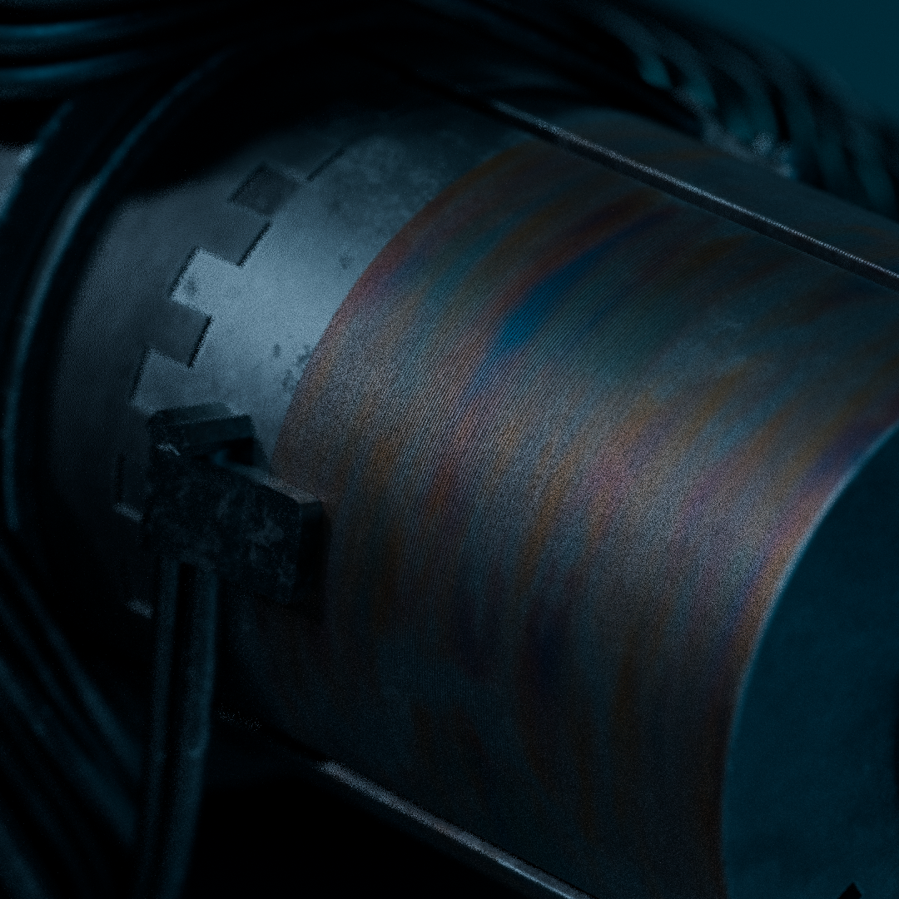

Machine
learning about USD inside Solaris with Houdini. in this case i also sharpening my modelling skills. i thought it would be beneficial as my familiariaze myself with houdini it would be good to postpone any simulation kind of things and just focused on easy thing such as setup lighting and undertsanding rendering with Karma.
as well as this, i also it would be a perfect timing to learning USD and jump in into solaris to cover all the lighting and rendering part.
modeling was done with blender, texturing with substance painter and lighing, rendering in karma with USD.



during the RND process, i was interested onn testing some sim and convert them to USD. here are some of the test that didnt continue to the end.